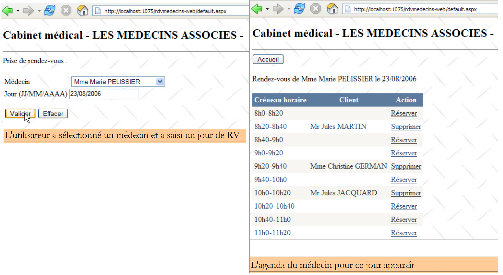
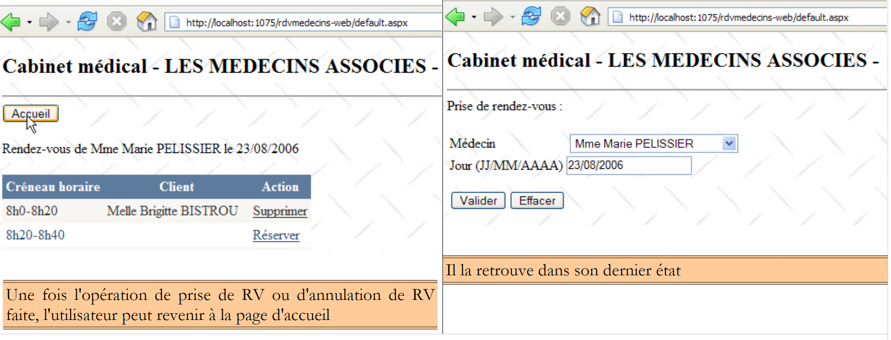
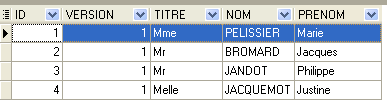

2. The : A Case Study
2.1. The Problem
Let’s return to the application we want to build. We’re starting with an existing application with the following architecture:
 |
For those who want to learn more about:
- NHibernate: Introduction to the NHibernate ORM [http://tahe.developpez.com/dotnet/nhibernate/];
- ASP.NET (WebForms) application with NHibernate and Spring: Building a three-tier web application with ASP.NET, Spring.NET, and NHibernate [http://tahe.developpez.com/dotnet/pam-aspnet/].
We want to transform the previous application into this one:
 |
where EF5 has replaced NHibernate. This application serves as a starting point for exploring EF5. Since Spring.NET allows us to easily switch layers without breaking anything, Application 2 will use the same layer [ASP.NET] as Application 1. Because this document focuses on EF5, we will not explain how to implement this layer. We will integrate it into Application 2 to verify that it works. We will simply explain the changes to be made in the Spring.NET configuration file.
The case study is as follows. We want to offer doctors an appointment scheduling service that operates on the following principle:
- an administrative service handles appointment scheduling for a large number of doctors. This service may consist of a single person. That person’s salary is shared among all doctors using the appointment service;
- the administrative office and all doctors are connected to the Internet;
- Appointments are recorded in a centralized database, accessible via the Internet by the administrative office and the doctors;
- Appointments are normally scheduled by the administrative staff. They can also be scheduled by the doctors themselves. This is particularly the case when, at the end of a consultation, the doctor schedules a new appointment for the patient.
The architecture of the appointment scheduling service is as follows:
 |
Doctors become more efficient if they no longer have to manage appointments. If there are enough of them, their contribution to the administrative office’s operating costs will be minimal. We will call the application [RdvMedecins]. Below are screenshots of how it works.
The application’s home page is as follows:

From this first page, the user (Secretary, Doctor) will perform a number of actions. We present them below. The left view shows the screen from which the user makes a request; the right view shows the response sent by the server.
 |
 |
 |
 |
 |
2.2. The Database
The database used by the NHibernate application is a MySQL5 database with four tables:

We will use this as a reference to build all our databases.
2.2.1. The [DOCTORS] table
It contains information about the doctors managed by the [RdvMedecins] application.
 |  |
- ID: the doctor’s ID number—the table’s primary key
- VERSION: a number identifying the version of the row in the table. This number is incremented by 1 each time a change is made to the row.
- LAST_NAME: the doctor’s last name
- FIRST_NAME: the doctor's first name
- TITLE: their title (Ms., Mrs., Mr.)
2.2.2. The [CLIENTS] table
The clients of the various doctors are stored in the [CLIENTS] table:
 |  |
- ID: the client's ID number—the table's primary key
- VERSION: number identifying the version of the row in the table. This number is incremented by 1 each time a change is made to the row.
- LAST_NAME: the client's last name
- FIRST NAME: the client's first name
- TITLE: their title (Ms., Mrs., Mr.)
2.2.3. The [SLOTS] table
It lists the time slots when appointments are available:
 |
 |
- ID: ID number for the time slot - primary key of the table
- VERSION: number identifying the version of the row in the table. This number is incremented by 1 each time a change is made to the row.
- DOCTOR_ID: ID number identifying the doctor to whom this time slot belongs – foreign key on the DOCTORS(ID) column.
- START_TIME: start time of the time slot
- MSTART: Start minute of the time slot
- HFIN: slot end time
- MFIN: End minutes of the slot
The second row of the [SLOTS] table (see [1] above) indicates, for example, that slot #2 begins at 8:20 a.m. and ends at 8:40 a.m. and belongs to doctor #1 (Ms. Marie PELISSIER).
2.2.4. The [RV] table
It lists the appointments booked for each doctor:
 |
- ID: unique identifier for the appointment – primary key
- DAY: day of the appointment
- SLOT_ID: appointment time slot – foreign key on the [ID] column of the [SLOTS] table – determines both the time slot and the doctor involved.
- CLIENT_ID: ID of the client for whom the reservation is made – foreign key on the [ID] column of the [CLIENTS] table
This table has a uniqueness constraint on the values of the joined columns (DAY, SLOT_ID):
If a row in the [RV] table has the value (DAY1, SLOT_ID1) for the columns (DAY, SLOT_ID), this value cannot appear anywhere else. Otherwise, this would mean that two appointments were booked at the same time for the same doctor. From a Java programming perspective, the database’s JDBC driver throws an SQLException when this occurs.
The row with ID equal to 7 (see [1] above) means that an appointment was booked for slot #10 and client #2 on 09/10/2006. The [SLOTS] table tells us that slot #10 corresponds to the 11:00 AM – 11:20 AM time slot and belongs to doctor #1 (Ms. Marie PELISSIER). The [CLIENTS] table tells us that client #2 is Ms. Christine GERMAN.
This case study was the subject of a Java article [http://tahe.developpez.com/java/primefaces] in which the Hibernate ORM for Java is used.